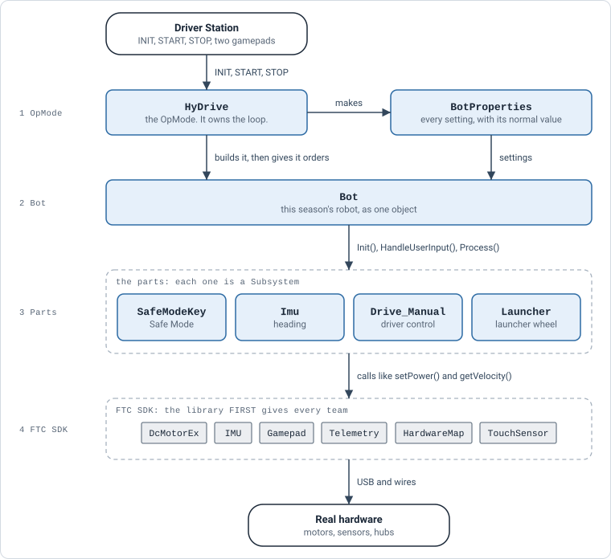
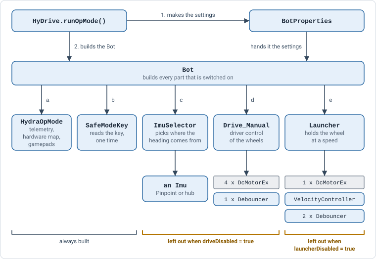
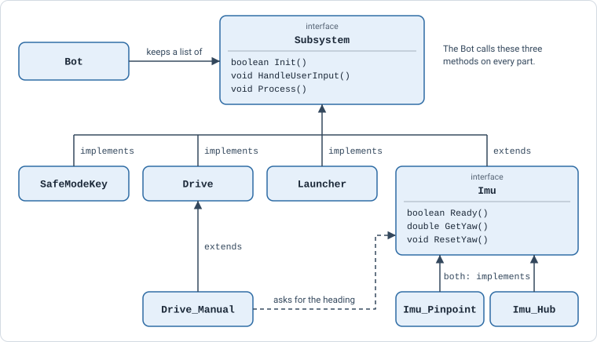
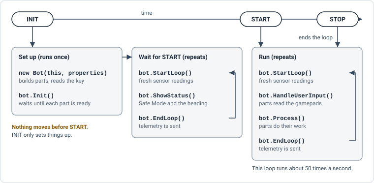
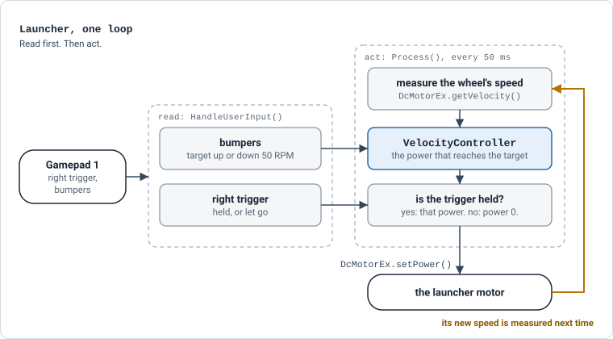
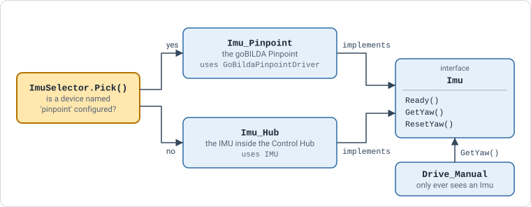
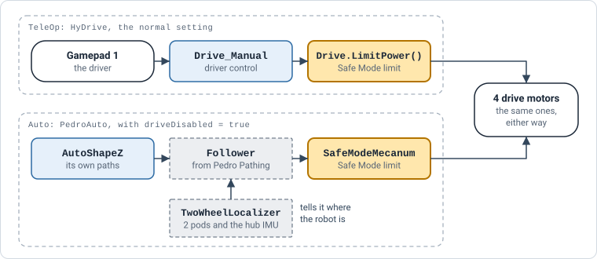

Section 1The short version
A robot program is a loop: read the sensors and gamepads, decide, move, repeat. About 50 times a second.
The code is four layers. Each layer only talks to the one below it.

- The OpMode is short. It makes the settings, builds the Bot, and runs the loop.
- The Bot knows which parts this robot has. It passes each order on to every part.
- A part owns its own motors and sensors. Nothing else touches them.
- The FTC SDK is the only layer that talks to real hardware.
How to read every diagram on this page
- A class our team wrote
- A class from the FTC SDK
- A class from Pedro Pathing
- A step, in plain words
- Outside the code: people and hardware
- The thing that figure is about
Section 2Who is who
Every class, and the one job it has. Each name opens the file.
| Class | Folder | Its job |
|---|---|---|
HyDrive | opMode/ | The TeleOp the drivers pick. Makes the settings, builds the Bot, runs the loop. |
BotProperties | bot/ | Every setting, with a name and its normal value. An OpMode changes only what it needs. |
Bot | bot/ | This season's robot. Builds the parts and passes each order on to them. |
HydraOpMode | objects/ | What every part needs from the OpMode, in one object: telemetry, the hardware map, both gamepads, the Safe Mode flag. |
Subsystem | objects/ | The rule every part follows: Init(), HandleUserInput(), Process(). |
SafeModeKey | subsystems/ | Reads the Safe Mode key one time and sets the Safe Mode flag. |
Imu | subsystems/ | The rule for "something that knows which way the robot faces". |
Imu_PinpointImu_Hub | subsystems/ | Two parts that follow the Imu rule. The robot uses one of them. |
ImuSelector | subsystems/ | Picks which of the two to use. |
Drive | subsystems/ | Owns the four drive motors. Applies the Safe Mode limit. |
Drive_Manual | subsystems/ | Drive, plus driver control from the gamepad. |
Launcher | subsystems/ | The launcher wheel, held at a target speed. |
Vision | subsystems/ | The rule for "something that sees AprilTags": is there a tag, which way, how far. |
Vision_LimelightVision_WebcamVision_None | subsystems/ | Three parts that follow the Vision rule: a Limelight, a webcam, or no camera at all. |
VisionSelector | subsystems/ | Picks which of the three to use. |
AimAssist | objects/ | The turn that points the robot at a tag. Math only. |
MecanumMath | objects/ | Turns "drive, strafe, rotate" into four wheel powers. Math only. |
Debouncer | objects/ | Turns a held button into one clean press. |
MotorSlewRate | objects/ | Changes a motor's power a little at a time, so the robot does not jerk. |
VelocityController | objects/ | Picks the power that holds a wheel at a speed. Math only. |
Section 3Who builds what
HyDrive makes two objects. The Bot makes everything else.

- a and b always happen. No OpMode can forget to check the Safe Mode key.
- c and d are left out when
properties.driveDisabledis true. - The camera is built too, before the drive, unless
properties.visionDisabledis true. It is not in the picture yet. - e is left out when
properties.launcherDisabledis true.HyDrivesets this today: the launcher is not part of HyDrive yet (decision 0009). - A part that is left out is never built. Its motors do not even have to be in the robot configuration.
- The order matters. Parts run each loop in the order they were built. The
Imuis built beforeDrive_Manual, so the drive always sees this loop's heading.
Every part follows the same rule
The Bot does not know what a launcher is. It keeps a list of Subsystems and calls the same three methods on each one.

Subsystem rule. Every part promises to follow it.The words on the arrows are the same words you will see in the Java files:
implementsmeans "follows this rule".class Launcher implements Subsystemis a promise thatLauncherhas all three methods.extendsmeans "is this, plus more".class Drive_Manual extends Driveis aDrivewith driver control added.
Section 4From INIT to STOP
The Driver Station has three buttons. Each one moves the program to its next phase.

| Bot method | What it does | Why |
|---|---|---|
new Bot(...) | Builds the parts. Checks the Safe Mode key. | Set up without moving. |
Init() | Asks every part to get ready, and waits until they all are. | A Pinpoint needs the robot still for about a quarter second. |
ShowStatus() | Shows Safe Mode, the heading, and which parts are off. | Check the robot before pressing START. |
StartLoop() | Throws away last loop's sensor readings. Times the loop. | Every part sees fresh readings. |
HandleUserInput() | Every part reads the gamepads. | TeleOp only. An auto has no gamepads. |
Process() | Every part does its work for one loop. | TeleOp and Auto. |
EndLoop() | Sends this loop's telemetry to the Driver Station. | One update per loop. |
bot.StartLoop() must be the first line of every loop. Without it, the sensors keep returning old readings.
Section 5One loop of driving
A stick push becomes wheel power in two steps. First the drive reads. Then it acts.
![Drive_Manual, one loop. Read: HandleUserInput remembers the sticks, as drive, strafe and rotate, and picks a speed limit: slow 0.25, normal 1 or boost 1. Act: Process runs four steps. One, MecanumMath.FieldCentric turns the sticks and the yaw from the Imu into four wheel powers. Two, multiply by the speed limit. Three, Drive.LimitPower applies Safe Mode, a quarter of the power. Four, MotorSlewRate.Set changes the power by 0.2 per loop at most. Then DcMotorEx.setPower goes to the four drive motors.](diagrams/05-drive-loop.svg)
- The stick values and the heading both go into
MecanumMath. The speed limit picked in the read step is used in the multiply step. - Every drive power goes through
Drive.LimitPower(). That is the one place Safe Mode is applied to driver control. - No heading yet?
Drive_Manualuses 0, so the robot drives as if it faces forward. - Circle (B on an Xbox pad) makes the way the robot faces now count as forward.
- Left bumper, held: aim assist. The turn comes from
AimAssistand the nearest tag theVisionsees, instead of the right stick. See decision 0011.
The launcher's loop
The launcher is a second part with the same shape: read, then act.

- It is a feedback loop. Measure, correct, measure again. That is how the wheel holds its speed as the battery drains.
- Safe Mode does not limit the launcher. It only limits the drive.
How it holds an RPM, with real numbers
Every 50 ms the VelocityController adds up three parts. The biggest part, feed forward, comes from the target alone. The others correct what is wrong right now and what has been wrong for a while.
![One update of VelocityController.Calculate with example numbers. Target 1000 RPM, measured 900 RPM. Error is target minus measured, 100. Feed forward is kF times target, 0.000242 times 1000, 0.242. Proportional is kP times error, 0.003 times 100, 0.300. Integral is kI times the error added up over time, 0. Power is the sum, 0.542, kept between 0 and 1. If the right trigger is held the power goes to the launcher motor, otherwise 0. The wheel spins, its speed is measured from the encoder, ticks per second divided by 28 times 60, and that measured RPM feeds back into the next update.](diagrams/07-launcher-rpm-control.svg)
- Feed forward does most of the work. At 1000 RPM it asks for 0.242 power before anything is measured.
- Proportional fixes what is wrong now. 100 RPM slow adds 0.300. Too fast would subtract.
- Integral is off for now (
launcherKIis 0). Turn it up only if the wheel settles a little below the target and stays there. - Every number has a name in
BotProperties. Tuning order:launcherKFfirst, thenlauncherKP. See decision 0009.
Section 6Swap points
A swap point is a place where two different parts can do the same job, and the code around them does not change.
Heading: Pinpoint or the hub's IMU
Drive_Manual needs one number: which way the robot faces. Two parts can give it.

Imu_Pinpoint | Imu_Hub | |
|---|---|---|
| Hardware | goBILDA Pinpoint odometry computer | The IMU inside the Control Hub |
| FTC class | GoBildaPinpointDriver | IMU, set up with RevHubOrientationOnRobot |
| Name in the robot configuration | pinpoint | imu |
| Ready when | It finishes calibrating. Keep the robot still. | Right away. If it fails to start, INIT still finishes. |
| How it reads the heading | update(), then getHeading() | getRobotYawPitchRollAngles() |
| How it resets to 0 | Remembers the heading now, and subtracts it later | Tells the IMU to resetYaw() |
Settings in BotProperties | cfgPinpoint, pinpointInPerTick, pinpointParYTicks, pinpointPerpXTicks | cfgHubImu, hubLogoFacing, hubUsbFacing |
| Good to know | More accurate. Can also give position later. | Drifts more. Press circle to re-set forward now and then. |
- To swap: add a Pinpoint to the robot configuration and name it
pinpoint. No code changes. The Driver Station says which one was picked ("Heading from: ..."). See decision 0005. - Why it works: both classes say
implements Imu.Drive_Manualis handed "an Imu" and callsGetYaw(). It never learns which kind it got.
Who drives the wheels: the driver or a path
Only one thing may drive the wheels at a time.

| TeleOp | Auto | |
|---|---|---|
| Who decides where to go | The driver | The path |
| Class that drives the wheels | Drive_Manual | Pedro's Follower, through SafeModeMecanum |
| Where the heading comes from | Our Imu | Pedro's own localizer |
| Where Safe Mode is applied | Drive.LimitPower() | SafeModeMecanum.applyDrive() |
| How the OpMode asks for it | Nothing to do. It is the normal setting. | properties.driveDisabled = true; then bot.CreateFollower() |
An auto sets driveDisabled so that Drive_Manual is never built. Otherwise it would set the wheels to 0 every loop and fight the Follower. See PedroAuto and decision 0008.
Every swap point, in one table
| What you want to swap | Where the switch is | What stays the same |
|---|---|---|
| Pinpoint or hub IMU for the heading | The robot configuration: is there a pinpoint? | Drive_Manual |
| Limelight, webcam or no camera for the tags | The robot configuration: is there a limelight, or a Webcam 1? | Drive_Manual and aim assist |
| Driver control or path following | driveDisabled in the OpMode | The 4 motors, their names, Safe Mode |
| Field-centric or robot-centric driving | fieldCentricDrive in BotProperties | Everything after MecanumMath |
| Leave the drive out of an OpMode | driveDisabled in the OpMode | The other parts |
| Leave the launcher out of an OpMode | launcherDisabled in the OpMode | The other parts |
| Touch sensor or magnetic switch for the Safe Mode key | cfgSafeModeKey and keyPressedMeansKeyIn in BotProperties | SafeModeKey. Both sensors are an FTC TouchSensor. |
| Pinpoint instead of two pods for auto position | PedroConstants.CreateFollower() | The paths and the autos |
A change made in an OpMode only counts in that OpMode:
BotProperties properties = new BotProperties();
properties.driveDisabled = true; // this OpMode leaves the drive out
Bot bot = new Bot(this, properties);To change a setting for every OpMode, change its normal value in BotProperties.
Section 7What comes from FTC
The FTC SDK is the library FIRST gives every team. It knows how to talk to hubs, motors, sensors and the Driver Station. We import its classes. We never change them.
![Our classes on the left, what each imports from FTC on the right. OpModes import LinearOpMode, @TeleOp and @Autonomous. Bot imports LinearOpMode, ElapsedTime and LynxModule. HydraOpMode imports HardwareMap, Telemetry and Gamepad. Drive and Launcher import DcMotorEx. Imu_Hub imports IMU and RevHubOrientationOnRobot. Imu_Pinpoint imports GoBildaPinpointDriver. SafeModeKey imports TouchSensor. The pedro folder uses Pedro Pathing, a separate library. Subsystem, Imu, MecanumMath, Debouncer, VelocityController and Alliance import nothing from FTC.](diagrams/10-ftc-imports.svg)
The FTC classes we use
| FTC class | What it is | Who uses it | Package |
|---|---|---|---|
LinearOpMode | The base of every OpMode. Gives us runOpMode(), opModeInInit(), opModeIsActive(). | Every OpMode, Bot | com. |
@TeleOp@Autonomous | Puts an OpMode in the Driver Station's list. | Every OpMode | same |
HardwareMap | Looks up a device by its name in the robot configuration. | HydraOpMode, then every part | com. |
Gamepad | One controller: sticks, triggers, buttons. | HydraOpMode, Drive_Manual, Launcher | same |
DcMotorExDcMotor | A motor: setPower(), getVelocity(), run modes. | Drive, Launcher, MotorSlewRate, DriveMotorTest | same |
IMU | The heading sensor inside the Control Hub. | Imu_Hub | same |
TouchSensor | A sensor that is pressed or not. | SafeModeKey | same |
Telemetry | Text on the Driver Station screen. | HydraOpMode, then every part | org. |
AngleUnitDistanceUnit | Degrees, radians, millimeters, inches. | Imu_Hub, Imu_Pinpoint | org. |
ElapsedTime | A stopwatch. | Bot, Launcher | com. |
LynxModule | A REV hub. Lets us read all its sensors in one trip per loop. | Bot | com. |
RevHubOrientationOnRobot | Which way the hub is mounted on the robot. | BotProperties, Imu_Hub, PedroConstants | com. |
GoBildaPinpointDriver | The goBILDA Pinpoint. | Imu_Pinpoint, ImuSelector | com. |
Packages that start com.qualcomm.robotcore or org.firstinspires.ftc.robotcore come from the SDK's RobotCore library. Packages that start com.qualcomm.hardware come from its Hardware library. Both are version 12.0.0, set in build.dependencies.gradle.
Our classes with no FTC import at all
Subsystem, Imu, MecanumMath, Debouncer, VelocityController, Alliance.
These are plain Java. They need no robot, so their tests run on a laptop in a few seconds. That is on purpose: the hard math lives where it is easy to check.
Pedro Pathing
The pedro/ folder uses Pedro Pathing, a path-following library that is not part of the FTC SDK. Pedro then uses the same FTC motors and IMU that we do. Its main classes for us are Follower, Path, Pose, Mecanum and TwoWheelLocalizer.
After this pageRead next
- Decision 0010: why OpModes talk to a Bot, and why settings live in
BotProperties. - Decision 0005: the hub IMU as a stand-in for the Pinpoint.
- Decision 0008: Pedro Pathing and the practice autos.
- Decision 0007: the Safe Mode key.